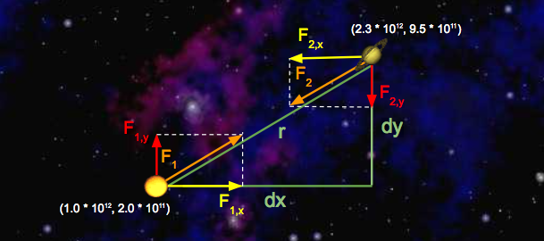

- Introduction
- Getting the Skeleton Files
- The Body Class and Its Constructor
- Understanding the Physics
- Writing the Body Class
- (Optional) Testing Your Body Class
- Getting Started with the Simulator (NBody.java)
- Drawing the Initial Universe State (main)
- Creating an Animation
- Printing the Universe
- Submission
- Extra for Experts
- Frequently Asked Questions
- I’m passing all the local tests, but failing even easy tests like testReadRadius in the autograder.
- The test demands 133.5, and I’m giving 133.49, but it still fails!
- When I run the simulation, my planets start rotating, but then quickly accelerate and disappear off of the bottom left of the screen.
- What is a constructor? How do I write one?
- I’m having trouble with the second Body constructor, the one that takes in another Body as its only argument.
- Acknowledgements
Introduction
The goal of this project is to give you a crash course in Java. Since CS61B is not intended to be a course about Java, we will be moving quickly, learning fundamental aspects of the Java language in just four weeks.
Before starting this project, you should have:
- Completed lab 1.
- Completed HW0.
- Attended or watched lecture #2.
You do not need to fully understand the contents of lecture 2 to begin this assignment. Indeed, the main purpose of this project is to help you build some comfort with the material in that lecture.
Unlike later projects, this assignment has a great deal of scaffolding. Future assignments will require significantly more independence. This project should be entirely your own work, i.e. you may not work closely with a partner or a group.
However, you’re welcome to discuss the project with your classmates as described in the rules described in the Course Info page.
Your goal for this project is to write a program simulating the motion of N
objects in a plane, accounting for the gravitational forces mutually affecting
each object as demonstrated by Sir Isaac Newton’s Law of Universal
Gravitation.
Ultimately, you will be creating a program NBody.java that draws an animation
of bodies floating around in space tugging on each other with the power of
gravity.
If you run into problems, be sure to check out the FAQ section before posting to Ed Discussions. We’ll keep this section updated as questions arise during the assignment. Always try googling before asking questions on Ed. Knowing how to find what you want on Google is a valuable skill. However, know when to yield! If you start getting frustrated with your search attempts, then turn to Ed. Be sure to check out our Ed Guide and Ed Policies.
Getting the Skeleton Files
Before proceeding, make sure you have completed lab1, and if you are working on your own computer, that you have completed lab1setup to set up your computer.
Head to the folder containing your copy of your repository. For example, if your Class ID is ‘fa20-s109’, then head to the ‘fa20-s109’ folder (or any subdirectory).
Now we’ll make sure you have the latest copy of the skeleton files with git pull skeleton master. Note: This command may result in a “merge”. You’ll know a merge has occurred if a text editor automatically opens. If this happens, see the Skeleton Merge Guide.
The Body Class and Its Constructor
You’ll start by creating a Body class. In your favorite text editor, create a
new file called Body.java. If you haven’t picked a text editor, we recommend
Sublime Text. Remember that your .java files
should have the same name as the class it contains.
Note: You should not use IntelliJ for this project! If you don’t know what IntelliJ is, good, that’s what we’ll be talking about in lab 2 (next week).
Begin by creating a basic version of the Body class with the following 6 instance variables:
double xxPos: Its current x positiondouble yyPos: Its current y positiondouble xxVel: Its current velocity in the x directiondouble yyVel: Its current velocity in the y directiondouble mass: Its massString imgFileName: The name of the file that corresponds to the image that depicts the body (for example,jupiter.gif)
Your instance variables must be named exactly as above, and they must be
explicitly set to public via the public keyword. The reason we call them by
double letters, e.g. xxPos rather than xPos is to reduce the chance of
typos. In past semesters, students have accidentally pressed x when they meant
y, and this has caused significant debugging hassle. After adding the 6 instance
variables above, add in two Body constructors that can initialize an instance
of the Body class. Later on, an instance of the Body class can represent a planet,
star, or various objects in this universe. The signature of the first
constructor should be:
public Body(double xP, double yP, double xV,
double yV, double m, String img)
Note: We have given parameter names that are different than the corresponding instance variable name. If you insist on making the parameter names the same as the instance variable names for aesthetic reasons, make sure to use the "this" keyword appropriately (mentioned only briefly in lecture).
The second constructor should take in a Body object and initialize an identical Body object (i.e. a copy). The signature of the second constructor should be:
public Body(Body b)
Your Body class should NOT have a main method, because we’ll never run the
Body class directly (i.e. we will never run java Body). Also, all methods
should be non-static.
All of the numbers for this project will be doubles. We’ll talk more aobut what
a double is later in the course, but for now, think of it is a real number,
e.g. double x = 3.5. In addition, all instance variables and methods will be
declared using the public keyword.
Once you have filled in the constructors, you can test it out by compiling your
Body.java file and the TestBodyConstructor.java file we have provided.
You can compile with the command:
javac Body.java TestBodyConstructor.java
Don’t worry if you get warnings about deprecation when compiling for this project.
You can run our provided test with the command
java TestBodyConstructor
If you pass this test, you’re ready to move on to the next step. Do not proceed until you have passed this test.
Understanding the Physics
In this section, we’re not going to do any programming. Instead, we’re going to review some basic physics that we’ll need to understand in order to continue with the project. At the end of this section you should complete the exercise labeled “Samh, Aegir, and, Rocinante”. There is no way to submit this work, but make sure you can understand it before you proceed to the following section.
Our Body objects will obey the laws of Newtonian physics.
Pairwise Force
Newton’s law of universal gravitation asserts that the strength of the gravitational force between two particles is given by the product of their masses divided by the square of the distance between them, scaled by the gravitational constant $G = 6.67 \cdot 10^{-11} \dfrac{\text{Nm}^2}{\text{kg}^2}$. The gravitational force exerted on a particle is along the straight line between them (we are ignoring here strange effects like the curvature of space). Since we are using Cartesian coordinates to represent the position of a particle, it is convenient to break up the force into its $x$- and $y$-components ($F_x$, $F_y$). The relevant equations are shown below. We have not derived these equations, and you should just trust us.
- $F = \dfrac{G \cdot m_1 \cdot m_2}{r^2}$
- $r^2 = dx^2 + dy^2$
- $F_x = \dfrac{F \cdot dx}{r}$
- $F_y = \dfrac{F \cdot dy}{r}$
Note that force is a vector (i.e., it has direction). In particular, be aware that dx and dy are signed (positive or negative).
Consider a small example consisting of two celestial objects: Saturn and the Sun. Suppose the Sun is at coordinates $(1.0 \cdot 10^{12}, 2.0 \cdot 10^{11})$ and Saturn is at coordinates $(2.3 \cdot 10^{12}, 9.5 \cdot 10^{11})$. Assume that the Sun’s mass is $2.0 \cdot 10^{30} \text{ kg}$ and Saturn’s mass is $6.0 \cdot 10^{26} \text{ kg}$. Here’s a diagram of this simple solar system:

Let’s run through some sample calculations. First let’s compute $F_1$, the force that Saturn exerts on the Sun. We’ll begin by calculating $r$, which we’ve already expressed above in terms of $dx$ and $dy$. Since we’re calculating the force exerted by Saturn, $dx$ is Saturn’s $x$-position minus Sun’s $x$-position, which is $1.3 \times 10^{12} \text{ m}$. Similarly, $dy$ is $7.5 \cdot 10^{11} \text{ m}$.
So, $r^2 = dx^2 + dy^2 = (1.3 \cdot 10^{12})^2 + (7.5 \cdot 10^{11})^2$. Solving for $r$ gives us $1.5 \cdot 10^{12} \text{ m}$. Now that we have $r$, computation of $F$ is straightforward:
$F = \dfrac{G \cdot (2.0 \cdot 10^{30} \text{ kg}) \cdot (6.0 \cdot 10^{26} \text{kg})}{(1.5 \cdot 10^{12} \text{ m})^2} = 3.6 \cdot 10^{22} \text{ N}$
Note that the magnitudes of the forces that Saturn and the Sun exert on one another are equal; that is, $|F| = |F_1| = |F_2|$. Now that we’ve computed the pairwise force on the Sun, let’s compute the $x$- and $y$-components of this force, denoted with $F_{1,x}$ and $F_{1, y}$, respectively. Recall that $dx$ is $1.3 \cdot 10^{12}$ meters and $dy$ is $7.5 \cdot 10^{11}$ meters. So,
- $F_{1,x} = \dfrac{F_1 \cdot (1.3 \cdot 10^{12} \text{ m})}{1.5 \cdot 10^{12} \text{ m}} = 3.1 \cdot 10^{22} \text{ N}$
- $F_{1, y} = \dfrac{F_1 \cdot (7.5 \cdot 10^{11} \text{ m})}{1.5 \cdot 10^{12} \text{ m}} = 1.8 \cdot 10^{22} \text{ N}$
Note that the sign of $dx$ and $dy$ is important! Here, $dx$ and $dy$ were both positive, resulting in positive values for $F_{1, x}$ and $F_{1, y}$. This makes sense if you look at the diagram: Saturn will exert a force that pulls the Sun to the right (positive $F_{1, x}$ ) and up (positive $F_{1, y}$).
Next, let’s compute the x and y-components of the force that the Sun exerts on Saturn. The values of $dx$ and $dy$ are negated here, because we’re now measuring the displacement of the Sun relative to Saturn. Again, you can verify that the signs should be negative by looking at the diagram: the Sun will pull Saturn to the left (negative $dx$) and down (negative $dy$).
- $F_{2, x} = \dfrac{F_2 \cdot (-1.3 \cdot 10^{12} \text{ m})}{1.5 \cdot 10^{12} \text{ m}} = -3.1 \cdot 10^{22} \text{ N}$
- $F_{2, y} = \dfrac{F_2 \cdot(-7.5 \cdot 10^{11} \text{ m})}{1.5 \cdot 10^{12} \text{ m}} = -1.8 \cdot 10^{22} \text{ N}$
Net Forces
The principle of superposition says that the net force acting on a particle in the x- or y-direction is the sum of the pairwise forces acting on the particle in that direction.
To illustrate this idea, let’s add Neptune to the mix and calculate the net force on Saturn. Here’s a diagram illustrating the forces being exerted on Saturn in this new system:
We can calculate the $x$-component of the net force on Saturn by summing the $x$-components of all pairwise forces. Likewise, $F_{\text{net}, y}$ can be calculated by summing the $y$-components of all pairwise forces. Assume the forces exerted on Saturn by the Sun are the same as above, and that $F_{2,x} = 1.1 \cdot 10^{22} \text{ N}$ and $F_{2,y} = 9.0 \cdot 10^{21} \text{N}$.
- $F_{\text{net}, x} = F_{1, x} + F_{2, x} = -3.1 \cdot 10^{22} \text{ N} + 1.1 \cdot 10^{22} \text{ N} = -2.0 \cdot 10^{22} \text{ N}$
- $F_{\text{net}, y} = F_{1, y} + F_{2, y} = -1.8 \cdot 10^{22} \text{ N} + 9.0 \cdot 10^{21} \text{ N} = -9.0 \cdot 10^{21} \text {N}$
Force and Acceleration
Newton’s second law of motion says that the accelerations in the x- and y-directions are given by:
- $a_x = \dfrac{F_x}{m}$
- $a_y = \dfrac{F_y}{m}$
For example, Saturn will experience an acceleration in the x direction of $\dfrac{F_{\text{net}, x}}{m} = \dfrac{-2.0 \cdot 10^{22} \text{ N}}{6.0 \cdot 10^{26} kg} = -2.0 \cdot 10^{-4} m/s^2$.
Samh, Aegir, and, Rocinante
Suppose there are three bodies in space as follows:
- Samh: $x = 1, y = 0, \text{mass} = 7 \cdot 10^5$
- Aegir: $x = 3, y = 3, \text{mass} = 8 \cdot 10^5$
- Rocinante: $x = 5, y = -3, \text{mass} = 9 \cdot 10^6$
Show that $F_{\text{net}, x}$ and $F_{\text{net}, y}$ exerted on Samh are around 15.04 N and -7.69 N, respectively. If you’re stuck and can’t figure these out, see: here for $F_{\text{net}, x}$ and here for $F_{\text{net}, y}$.
Writing the Body Class
In our program, we’ll have instances of the Body class do the job of calculating
all the numbers we learned about in the previous example. We’ll write helper
methods, one by one, until our Body class is complete.
calcDistance
Start by adding a method called calcDistance that calculates the distance
between two Bodys. This method will take in a single Body and should return
a double equal to the distance between the supplied body and the body that
is doing the calculation, e.g.
samh.calcDistance(rocinante);
It is up to you this time to figure out the signature of the method. Once you have completed this method, go ahead and recompile and run the next unit test to see if your code is correct.
Compile and run with:
javac Body.java TestCalcDistance.java
java TestCalcDistance
Note that in Java, there is no built-in operator that does squaring or exponentiation.
calcForceExertedBy
The next method that you will implement is calcForceExertedBy. The
calcForceExertedBy method takes in a Body, and returns a double describing
the force exerted on this body by the given body. You should be calling
the calcDistance method inside this method. As an example,
samh.calcForceExertedBy(rocinante) for the numbers in “Double Check Your
Understanding” return $16.8084$. The force exerted by a body on itself should be 0.
To compare two bodies, use the .equals method instead of ==:
samh.equals(samh) (which would return true). In week 2, we will explain the difference.
Once you’ve finished calcForceExertedBy, re-compile and run the next unit
test.
javac Body.java TestCalcForceExertedBy.java
java TestCalcForceExertedBy
Hint 1: Java supports scientific notation. For example, I can write double
someNumber = 1.03e-7;.
calcForceExertedByX and calcForceExertedByY
The next two methods that you should write are calcForceExertedByX and
calcForceExertedByY. Unlike the calcForceExertedBy method, which returns
the total force, these two methods describe the force exerted in the X and Y
directions, respectively. Remember to check your signs! Once you’ve finished,
you can recompile and run the next unit test. As an example,
samh.calcForceExertedByX(rocinante) in “Double Check Your Understanding”
should return $13.44672$.
NOTE: Do not use Math.abs to fix sign issues with these methods. This will cause issues later when drawing planets.
javac Body.java TestCalcForceExertedByXY.java
java TestCalcForceExertedByXY
calcNetForceExertedByX and calcNetForceExertedByY
Write methods calcNetForceExertedByX and calcNetForceExertedByY that each
take in an array of Bodys and calculates the net X and net Y force exerted by
all bodies in that array upon the current Body. For example, consider the
code snippet below:
Body[] allBodys = {samh, rocinante, aegir};
samh.calcNetForceExertedByX(allBodys);
samh.calcNetForceExertedByY(allBodys);
The two calls here would return the values given in “Double Check Your Understanding.”
As you implement these methods, remember that Bodys cannot exert
gravitational forces on themselves! Can you think of why that is the case
(hint: the universe will possibly collapse in on itself, destroying everything
including you)? To avoid this problem, ignore any body in the array that is
equal to the current body.
When you are done go ahead and run:
javac Body.java TestCalcNetForceExertedByXY.java
java TestCalcNetForceExertedByXY
We recommend using the “enhanced for loop” for this part of the assignment. In case you missed it in HW0, you can read more about them at this link. HW0. This is not necessary to complete the project, but it’s a nice piece of syntax with which to be familiar.
update
Next, you’ll add a method that determines how much the forces exerted on the
body will cause that body to accelerate, and the resulting change in the
body’s velocity and position in a small period of time $dt$. For example,
samh.update(0.005, 10, 3) would adjust the velocity and position if an
$x$-force of $10 \text{ Newtons}$ and a $y$-force of $3 \text{ Newtons}$ were
applied for $0.005 \text{ seconds}$.
You must compute the movement of the Body using the following steps:
- Calculate the acceleration using the provided $x$- and $y$-forces.
- Calculate the new velocity by using the acceleration and current velocity. Recall that acceleration describes the change in velocity per unit time, so the new velocity is $(v_x + dt \cdot a_x, v_y + dt \cdot a_y)$.
- Calculate the new position by using the velocity computed in step 2 and the current position. The new position is $(p_x + dt \cdot v_x, p_y + dt \cdot v_y)$.
Let’s try an example! Consider a squirrel initially at position $(0, 0)$ with a $v_x$ of $3 \dfrac{\text{m}}{\text{s}}$ and a $v_y$ of $5 \dfrac{\text{m}}{\text{s}}$. $F_{\text{net}, x}$ is $-5 \text{ N}$ and $F_{\text{net}, y}$ is $-2 \text{ N}$. Here’s a diagram of this system:
We’d like to update with a time step of $1 \text{ second}$. First, we’ll calculate the squirrel’s net acceleration:
- $a_{\text{net}, x} = \dfrac{F_{\text{net}, x}}{m} = \dfrac{-5 \text{ N}}{1 \text{ kg}} = -5 \dfrac{\text{m}}{\text{s}^2}$
- $a_{\text{net}, y} = \dfrac{F_{\text{net}, y}}{m} = \dfrac{-2 \text{ N}}{1 \text{ kg}} = -2 \dfrac{\text{m}}{\text{s}^2}$
With the addition of the acceleration vectors we just calculated, our system now looks like this:
Second, we’ll calculate the squirrel’s new velocity:
-
$v_{\text{new}, x} = v_{\text{old}, x} + dt \cdot a_{\text{net}, x} = 3 \dfrac{\text{m}}{\text{s}} + 1 \text{ s} \cdot -5 \dfrac{\text{m}}{\text{s}^2} = -2 \dfrac{\text{m}}{\text{s}}$
-
$v_{\text{new}, y} = v_{\text{old}, y} + dt \cdot a_{\text{net}, y} = 5 \dfrac{\text{m}}{\text{s}} + 1 \text{ s} \cdot -2 \dfrac{\text{m}}{\text{s}^2} = -3 \dfrac{\text{m}}{\text{s}}$
Third, we’ll calculate the new position of the squirrel:
- $p_{\text{new}, x} = p_{\text{old}, x} + dt \cdot v_{\text{new}, x} = 0 \text{ m} + 1 \text{ s} \cdot -2 \dfrac{\text{m}}{\text{s}} = -2 \text{ m}$
- $p_{\text{new}, y} = p_{\text{old}, y} + dt \cdot v_{\text{new}, y} = 0 \text{ m} + 1 \text{ s} \cdot 3 \dfrac{\text{m}}{\text{s}} = 3 \text{ m}$
Here’s a diagram of the updated system:
For math/physics experts: You may be tempted to write a more accurate simulation where the force gradually increases over the specified time window. Don’t! Your simulation must follow exactly the rules above.
Write a method update(dt, fX, fY) that uses the steps above to update the
body’s position and velocity instance variables (this method does not need to
return anything).
Once you’re done, recompile and test your method with:
javac Body.java TestUpdate.java
java TestUpdate
Once you’ve done this, you’ve finished implementing the physics. Hoorah! You’re halfway there.
(Optional) Testing Your Body Class
As the semester progresses, we’ll be giving you fewer and fewer tests, and it will be your responsibility to write your own tests. Writing tests is a good way to improve your workflow and be more efficient.
Go ahead and try writing your own test for the Body class. Make a
TestBody.java file and write a test that creates two bodies and prints out
the pairwise force between them. This is optional and we will not be grading
this part of the assignment.
Getting Started with the Simulator (NBody.java)
Create a file named NBody.java. NBody is a class that will actually run your simulation. This class will have
NO constructor. The goal of this class is to simulate a universe specified in
one of the data files. For example, if we look inside data/planets.txt (using
the command line more command), we see the following:
$ more planets.txt
5
2.50e+11
1.4960e+11 0.0000e+00 0.0000e+00 2.9800e+04 5.9740e+24 earth.gif
2.2790e+11 0.0000e+00 0.0000e+00 2.4100e+04 6.4190e+23 mars.gif
5.7900e+10 0.0000e+00 0.0000e+00 4.7900e+04 3.3020e+23 mercury.gif
0.0000e+00 0.0000e+00 0.0000e+00 0.0000e+00 1.9890e+30 sun.gif
1.0820e+11 0.0000e+00 0.0000e+00 3.5000e+04 4.8690e+24 venus.gif
The input format is a text file that contains the information for a particular
universe (in SI units). The first value is an integer N which represents the
number of planets. The second value is a real number R which represents the
radius of the universe, used to determine the scaling of the drawing window.
Finally, there are N rows, and each row contains 6 values. The first two
values are the x- and y-coordinates of the initial position; the next pair of
values are the x- and y-components of the initial velocity; the fifth value is
the mass; the last value is a String that is the name of an image file used to
display the planets. Image files can be found in the images directory. The
file above contains data for our own solar system (up to Mars).
readRadius
Your first method is readRadius. Given a file name as a String, it should return a double
corresponding to the radius of the universe in that file, e.g.
readRadius("./data/planets.txt") should return 2.50e+11.
To help you understand the In class, we’ve provided a few examples for you in
the examples folder given in the skeleton.
The first one is called BasicInDemo.java. Take a look at the code, and
its input file, BasicInDemo_input_file.txt. This program should
output: The file contained 5, 9.0, ketchup, brass, and 5.0.
There’s a slightly more complicated example called InDemo.java, which you can
also find in the examples folder. While this demo does not perfectly match what
you’ll be doing in this project, every method that you need is somewhere in
this file. You’re also welcome to search the web for other examples (though it
might be tricky to find since the class name In is such a common English
word).
NOTE: Do not use System.exit(0) in your code, despite the example using it. This will break the autograder, and you will not obtain a score.
Alternately, you can consult the full documentation for the In class, though it can be found a bit intimidating.
We encourage you to do your best to figure out this part of the assignment on your own. In the long run, you’ll need to gain the skills to independently figure out this sort of thing. However, if you start getting frustrated, don’t hesitate to ask for help!
You can test this method using the supplied TestReadRadius.
javac NBody.java TestReadRadius.java
java TestReadRadius
readBodies
Your next method is readBodies. Given a file name, it should return an array
of Bodys corresponding to the bodies in the file, e.g.
readBodies("./data/planets.txt") should return an array of five planets. You
will find the readInt(), readDouble(), and readString() methods in the In
class to be useful.
You can test this method using the supplied TestReadBodies.
javac Body.java NBody.java TestReadBodies.java
java TestReadBodies
Drawing the Initial Universe State (main)
Next, build the functionality to draw the universe in its starting position. You’ll do this in four steps. Because all code for this part of the assignment is in main, this part of the assignment will NOT have automated tests to check each little piece.
Collecting All Needed Input
Create a main method in the NBody class. Write code so that your NBody class
performs the following steps:
- Store the 0th and 1st command line arguments as doubles named
Tanddt. Hint: the arguments come in as Strings. You will have to Google around in order to learn how to convert the Strings to doubles! - Store the 2nd command line argument as a String named
filename. - Read in the bodies and the universe radius from the file described by
filenameusing your methods from earlier in this assignment.
Drawing the Background
After your main method has read everything from the files, it’s time to get
drawing. First, set the scale so that it matches the radius of the universe.
Then draw the image starfield.jpg as the background. To do these, you’ll need
to figure out how to use the StdDraw library.
See StdDrawDemo.java in the examples folder for a demonstration of StdDraw.
This example, like InDemo.java, does not perfectly match what you’re doing.
In addition, make sure to check out the StdDraw section of this mini-tutorial, and if you’re feeling bold, the full StdDraw documentation. This will probably take some trial and error. This may seem slightly frustrating, but it’s good practice!
Note that, you may notice that putting starfield.jpg as a parameter into
StdDraw.picture() results in a blank screen. This is because our
starfield.jpg is inside the images folder. Thus, you will need to use the
full relative path from the proj0 directory, i.e. images/starfield.jpg
in order to get your image. This applies
to any other images you may use in the future.
Drawing One Body
Next, we’ll want a Body, such as a planet, to be able to draw itself at its
appropriate position. To do this, take a brief detour back to the Body.java
file. Add one last method to the Body class, draw, that uses the StdDraw API
mentioned above to draw the Body’s image at the Body’s position. The
draw method should return nothing and take in no parameters.
Drawing More than One Body
Return to the main method in NBody.java and use the draw method you just
wrote to draw each one of the bodies in the Bodys array you created. Be
sure to do this after drawing the starfield.jpg file so that the planets
don’t get covered up by the background.
Test that your main method works by compiling:
javac NBody.java
And running the following command:
java NBody 157788000.0 25000.0 data/planets.txt
You should see the sun and four planets sitting motionless. You are almost done.
Creating an Animation
Everything you’ve done so far is leading up to this moment. With only a bit more code, we’ll get something very cool.
To create our simulation, we will discretize time (please do not mention this
to Stephen Hawking). The idea is that at every discrete interval, we will be
doing our calculations and once we have done our calculations for that time
step, we will then update the values of our Bodys and then redraw the
universe.
Finish your main method by adding the following:
- Enable double buffering by calling
enableDoubleBuffering(). This is a graphics technique to prevent flickering in the animation. This should be just a single method call, so you shouldn’t do anything complicated here. You can see an example inStdDrawDemo.java. Here’s the official documentation that explains it in a few sentences. You don’t have to understand this for CS61B. Just know that if you don’t call this function, any attempt at smooth animation will look bad and flickery (remove it and see what happens!).- When double buffering is enabled by calling
enableDoubleBuffering(), all drawing takes place on the offscreen canvas. The offscreen canvas is not displayed. Only when you callshow()does your drawing get copied from the offscreen canvas to the onscreen canvas, where it is displayed in the standard drawing window. You can think of double buffering as collecting all of the lines, points, shapes, and text that you tell it to draw, and then drawing them all simultaneously, upon request.
- When double buffering is enabled by calling
- Create a variable that represents time. Set it to 0. Set up a loop to loop until this time
variable reaches (and includes) the
Tfrom above. - For each time through the loop, do the following:
- Create an
xForcesarray andyForcesarray. - Calculate the net x and y forces for each Body, storing these in the
xForcesandyForcesarrays respectively. - After calculating the net forces for every Body, call
updateon each of theBodys. This will update each body’s position, velocity, and acceleration. - Draw the background image.
- Draw all of the
Bodys. - Show the offscreen buffer (see the
showmethod of StdDraw). - Pause the animation for 10 milliseconds (see the
pausemethod of StdDraw). You may need to tweak this on your computer. - Increase your time variable by
dt.
- Create an
Important: For each time through the main loop, do not make any calls to
update until all forces have been calculated and safely stored in xForces
and yForces. For example, don’t call bodies[0].update() until after the
entire xForces and yForces arrays are done! The difference is subtle, but
the autograder will be upset if you call bodies[0].update before you
calculate xForces[1] and yForces[1].
Compile and test your program:
javac NBody.java
java NBody 157788000.0 25000.0 data/planets.txt
Make sure to also try out some of the other simulations, which can all be found
in the data directory. Some of them are very cool.
Printing the Universe
When the simulation is over, i.e. when you’ve reached time T, you should
print out the final state of the universe in the same format as the input,
e.g.:
5
2.50e11
1.4925e+11 -1.0467e+10 2.0872e+03 2.9723e+04 5.9740e+24 earth.gif
-1.1055e+11 -1.9868e+11 2.1060e+04 -1.1827e+04 6.4190e+23 mars.gif
-1.1708e+10 -5.7384e+10 4.6276e+04 -9.9541e+03 3.3020e+23 mercury.gif
2.1709e+05 3.0029e+07 4.5087e-02 5.1823e-02 1.9890e+30 sun.gif
6.9283e+10 8.2658e+10 -2.6894e+04 2.2585e+04 4.8690e+24 venus.gif
You are welcome to try to figure this out on your own, but if you’d prefer not to, the solution is right below:
StdOut.printf("%d\n", bodies.length);
StdOut.printf("%.2e\n", radius);
for (int i = 0; i < bodies.length; i++) {
StdOut.printf("%11.4e %11.4e %11.4e %11.4e %11.4e %12s\n",
bodies[i].xxPos, bodies[i].yyPos, bodies[i].xxVel,
bodies[i].yyVel, bodies[i].mass, bodies[i].imgFileName);
}
Here, bodies is our filler variable name for reading in the bodies, as per the third bullet under
Collecting All Needed Input.
You may have a different variable name.
This isn’t all that exciting (which is why we’ve provided a solution), but we’ll need this method to work correctly to autograde your assignment.
Submission
Submit to Gradescope via Github. If you pass all the tests, you get all the points. Hoorah! You may submit as many times as you’d like. If you have multiple submissions, select the one you wish for us to grade by pressing activate. I
Trying Out Other Universes
There are many more universes provided in the skeleton other
than planets.txt. You can find them in the data folder, e.g.
java NBody 20000000 20000 ./data/suninterference.txt. Try them out and see
if you can find any favorites.
Extra for Experts
Adding Audio
For a finishing touch, play the theme to 2001: A Space Odyssey using
StdAudio and the file 2001.mid. Feel free to add your own audio files and
create your own soundtracks! You may find the StdAudio section of this
mini-tutorial helpful. There is
no extra credit for adding sound. For some reason in more recent versions of
Java, StdAudio has occasionally failed to work. We’ll try to help, but we’ve
had a few cases where we were unable to get the sound file to play.
Going Above and Beyond (Gold Points) - Due 9/7
For those of you who want to try something wild, crazy, and new,
create new files NBodyExtreme.java and BodyExtreme.java. You may also add
additional classes as needed. Please include “Extreme” at the end of the filenames for clarity.
In the Extreme version of your NBody simulator, you should do something fundamentally new. There are a number of other interesting possibilities:
- Support elastic (or inelastic) collisions.
- Add the ability to programmatically generate planet images (rather than relying on input image files).
- Add the ability to control a spacecraft that is subject to the gravitational forces of the objects in the solar system.
No tips are provided here in the spec. If you want to know how to do any of the things listed above (or something else of your own imagining), try using search engines to learn how to do the thing you want to do.
For 48 gold points, create a public youtube video that demonstrates the behavior
NBodyExtreme and explains the changes you made. This video should be between 3
and 15 minutes long, and must include examples of the code running. Ideally,
you’ll have a narrative voice over, though it’s OK if you just want to use text
captions instead. As with the assignment itself, we do not provide any
specific guidance on HOW to make your video, and again encourage you to use
search engines to learn how. Gold Points are all about staking off on your own
and doing something independently. For reference, I’ve found that OBSStudio is
pretty good for recording videos, and it’s what I use for the lecture recordings.
There are no specific requirements for these points. If you’ve built something
big enough that you feel happy publicly sharing and explaining what you’ve made,
that’s good enough for us. Make sure your NBodyExtreme and BodyExtreme are
pushed to GitHub. When you’ve posted your video, fill out
this form.
Even though your youtube video will be public, you should not post your code publicly. In addition, you should not display your code in the video.
To see examples from previous semesters, check out this playlist!
Frequently Asked Questions
I’m passing all the local tests, but failing even easy tests like testReadRadius in the autograder.
Make sure you’re actually using the string argument that testReadRadius takes as input. Your code should work for ANY valid data file, not just planets.txt.
The test demands 133.5, and I’m giving 133.49, but it still fails!
Sorry, our sanity check tests have flaws. But you should ensure that your value
for G is $6.67 \cdot 10^{-11} \dfrac{\text{Nm}^2}{\text{kg}^2}$ exactly,
and not anything else (don’t make it more accurate).
When I run the simulation, my planets start rotating, but then quickly accelerate and disappear off of the bottom left of the screen.
- Look at the way you’re calculating the force exerted on a particular planet in one time step. Make sure that the force doesn’t include forces that were exerted in past time steps.
- Make sure you did not use
Math.abs(...)when calculatingcalcForceExertedByX(...)andcalcForceExertedByY(...). Also ensure that you are using adoubleto keep track of summed forces (notint)!
What is a constructor? How do I write one?
A constructor is a block of code that runs when a class is instantiated with
the new keyword. Constructors serve the purpose of initializing a
new object’s fields. Consider an example below:
public class Dog {
String _name;
String _breed;
int _age;
public Dog(String name, String breed, int age) {
_name = name;
_breed = breed;
_age = age;
}
}
The Dog class has three non-static fields. Each instance of the
Dog class can have a name, a breed, and an age. Our simple
constructor, which takes three arguments, initializes these fields for all new
Dog objects.
I’m having trouble with the second Body constructor, the one that takes in another Body as its only argument.
Let’s walk through an example of how a constructor works. Suppose you use the
Dog constructor above to create a new Dog:
Dog fido = new Dog("Fido", "Poodle", 1);
When this line of code gets executed, the JVM first creates a new Dog object
that’s empty. In essence, the JVM is creating a “box” for the Dog, and that
box is big enough to hold a box for each of the Dog’s declared instance
variables. This all happens before the constructor is executed. At this
point, here’s how you can think about what our new fluffy friend fido looks
like (note that this is a simplification! We’ll learn about a more correct view
of this when we learn about Objects and pointers later this semester):
Java will put some default values in each instance variable. We’ll learn more
about where these defaults come from (and what null means) later this
semester. For now, just remember that there’s space for all of the instance
variables, but those instance variables haven’t been assigned meaningful values
yet. If you ever want to see this in action, you can add some print statements
to your constructor:
public Dog(String name, String breed, int age) {
System.out.println("_name: " + _name + ", _breed: " + _breed + ", _age: " + _age);
_name = name;
_breed = breed;
_age = age;
}
If this constructor had been used to create fido above, it would have
printed:
_name: null, _breed: null, _age: 0
OK, back to making fido. Now that the JVM has made some “boxes” for fido,
it calls the Dog constructor function that we wrote. At this point, the
constructor executes just like any other function would. In the first line of
the constructor, _name is assigned the value name, so that fido looks
like:
When the constructor completes, fido looks like:
Now, suppose you want to create a new Dog constructor that handles
cross-breeding. You want the new constructor to accept a name, an age, and two
breeds, and create a new Dog that is a mixture of the two breeds. Your first
guess for how to make this constructor might look something like this:
public Dog(String name, String breed1, String breed2, int age) {
Dog dog = new Dog(name, breed1 + breed2, age);
}
However, if you try to create a new Dog using this constructor:
Dog tommy = new Dog("Tommy", "Poodle", "Golden Retriever", 1);
This won’t do what you want! As above, the first thing that happens is that
the JVM creates empty “boxes” for each of tommy’s instance variables:
But then when the 4-argument constructor got called, it created a second Dog
and assigned it to the variable dog. It didn’t change any of tommy’s
instance variables. Here’s how the world looks after the line in our new
constructor finishes:
dog isn’t visible outside of the constructor method, so when the constructor
completes, dog will be destroyed by the garbage collector (more on this
later!) and all we’ll have is the still un-initialized tommy variable.
Here’s a cross-breed constructor that works in the way we’d like:
public Dog(String name, String breed1, String breed2, int age) {
this(name, breed1 + breed2, age);
}
Here, we’re calling the old 3-argument constructor on this; rather than
creating a new Dog, we’re using the 3-argument constructor to fill in all of
the instance variables on this dog. After calling this new constructor to
create tommy, tommy will correctly be initialized to:
We could have also written a new constructor that assigned each instance variable directly, rather than calling the existing constructor:
public Dog(String name, String breed1, String breed2, int age) {
_name = name;
_breed = breed1 + breed2;
_age = age;
}
Acknowledgements
This assignment is a major revision by Josh Hug, Matthew Chow, and Daniel Nguyen of an assignment created by Robert Sedgewick and Kevin Wayne from Princeton University.